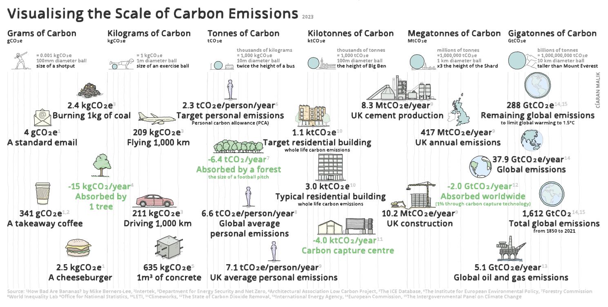
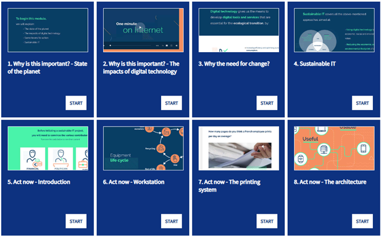
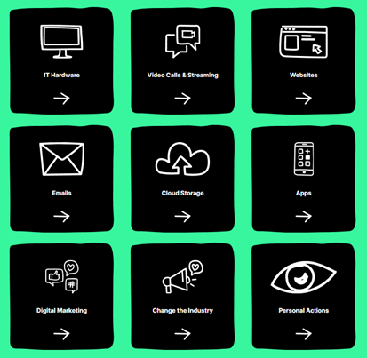
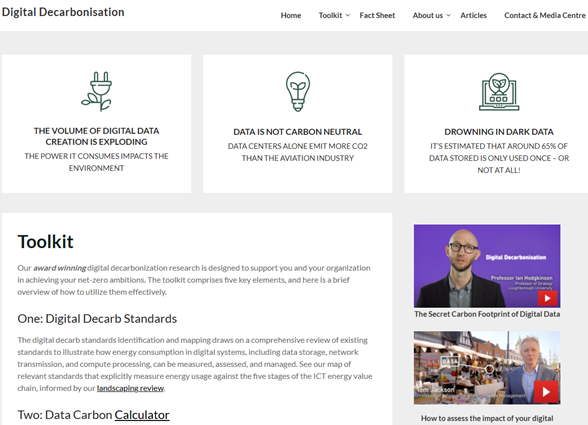

Digital Sustainability
A LIBER Digital Scholarship & Data Science Topic Guide for Library Professionals
![]() with special contributions from “Hack & Yack” session* participants Jez Cope, Catherine Ross, Lanie Okorodudu, Andrea Deri, Alex White, Angela Lofthouse, Mabel Msonthi, Gosta Johansson, Harry Lloyd, Rimma Lough, Jo Kent, Georgia Dack
with special contributions from “Hack & Yack” session* participants Jez Cope, Catherine Ross, Lanie Okorodudu, Andrea Deri, Alex White, Angela Lofthouse, Mabel Msonthi, Gosta Johansson, Harry Lloyd, Rimma Lough, Jo Kent, Georgia Dack Introduction
When we think about sustainability, our minds often jump to the visible stuff - energy-efficient lightbulbs, recycling bins, or cutting down on car journeys. We may also think about biodiversity, ecosystems, and air and water quality. These things are so crucial and fundamental to maintaining a healthy planet and human well-being. But the bigger picture of environmental sustainability is wider and includes aspects that are less tangible or observable, such as our use of technology.
Technology has long been framed as a solution to sustainability challenges - whether that’s through smart meters helping us monitor energy use, or online meetings replacing the need for travel. But technology itself is not impact-free. In fact, digital activities are now estimated to account for a larger share of global greenhouse gas emissions than aviation, and that figure is rising quickly (estimated at 2.5-3.7% for ICT and digital vs 2.1-2.4% for aviation; see Fact Sheet on the Digital Decarbonisation website).
Every email sent, every video streamed, every chatbot query made relies on data centres and networks that consume electricity and resources. The “cloud” isn’t floating somewhere in the sky - it’s made up of vast server farms that need constant power and cooling, with very real environmental costs. Those farms run on whatever kind of electricity their local grid runs on, and they are also responsible for all the embodied carbon that was needed to produce their buildings and hardware.
That’s where the term Digital Sustainability comes in. Put simply, it’s about recognising the environmental footprint of our digital lives, and making conscious choices to reduce it. Just as we might decide to cycle instead of drive, or turn down the thermostat at home, we can also make digital choices - from how we manage our files to how we design websites - that lessen the impact of our online activities.

{kind=link}
Digital sustainability invites us to think differently about our relationship with technology - not as something separate from the environment, but as an integral part of it. For libraries, this perspective offers both challenges and opportunities: how can digital collections, services, and infrastructure be managed in ways that align with environmental goals? In the next section, we’ll explore why this topic matters to the library sector and how libraries can take practical steps to make their digital operations more sustainable.
Relevance to the Library Sector (Case Studies/Use Cases)
Thinking about digital sustainability, libraries and heritage organisations are beginning to have really interesting and important conversations. Libraries are already deeply engaged in digital work: from digitising collections and preserving data, to running institutional websites, supporting research, and hosting community events online. The way we manage these activities has environmental implications, whether that’s the energy used in storing digital files, the hardware and software we procure, or the carbon intensity of the platforms we use for service delivery.
So the question is, how can the library profession build digital sustainability into its daily practice? This might mean rethinking working habits (like turning off cameras during meetings), building lighter and more efficient websites, setting greener standards for digitisation projects, or weaving sustainability commitments into library values and policies. It could also mean becoming advocates - helping our communities understand the impact of digital technologies, and giving them the skills to make better choices themselves. Digital sustainability is about making sure our digital future is not just accessible and innovative, but also environmentally responsible. For libraries, it’s an opportunity to align our core values of stewardship, learning, and community service with the urgent global challenge of climate change.
Here are just some examples which we’ve come across of heritage institutions addressing their digital carbon footprint (for more case studies, take a look at the Digital Humanities Climate Coalition case studies section).
Digitisation
Digitisation is a core part of museum or library work, but like all digital activity, it carries an environmental cost. Every scanned image, stored file, or online exhibition requires energy - from the servers that keep content accessible to the devices we use to engage with it. This was the focus of Encode (Muse) ran by the University of St Andrews. Working with colleagues across collections and archives, alongside international partners, the project explored how museums can address the carbon impact of their digital work. Through global workshops and strategic meetings with sector bodies, the team has highlighted the barriers institutions face in reducing the footprint of digital activities, while also identifying opportunities for change.
A key outcome has been the development of practical tools, including a list of carbon calculators already in use across the cultural sector, as well as guidelines and toolkits from museums around the world. These resources aim to support more sustainable digitisation practices, helping museums make value-driven decisions about when and how to digitise collections. Though rooted in the museum sector, this research has much wider relevance. Libraries and other collecting institutions face many of the same questions - about prioritising digitisation, managing storage, and designing workflows that balance preservation and access with environmental responsibility. By framing digitisation through the lens of sustainability, cultural organisations can continue to innovate digitally while also responding to the challenges of climate crisis.
Digital Preservation
The Box Plymouth has been actively addressing the environmental impact of digital preservation as part of its broader commitment to sustainability. Recognising that data centres contribute significantly to global emissions and that much digital content is redundant or rarely used, The Box’s Media Archives Team has adopted a “preventing pointless preservation” approach. They prioritise preserving vital, frequently used, or at-risk collections, create only the necessary highest- and lowest-quality versions of files, and generate access copies on demand. Using lossless compression, they reduce file sizes by a third without compromising quality, saving storage space, energy, and resources.
Efficiency and energy-conscious workflows are central to their strategy. Primary digital content is stored on LTO tapes, which consume energy only when in use, and automation has been introduced to preservation and monitoring tasks to reduce computer workload. Integrity checks are scheduled during off-peak hours, and redundant or duplicated content is regularly removed. The team is also implementing a Digital Asset Management system to streamline storage and prevent duplication. By combining these strategies, The Box ensures sustainable digital practice without compromising professional archiving standards, while improving organisational efficiency and supporting broader climate-conscious goals.
Greening the Web
Most libraries will have a web presence of some sort, and you may even be involved in setting up small project sites as well. Each of these new additions to the web will have an impact on the environment and we have the power to minimise this impact through committing to green principles in their design and hosting, from image file sizing to proactively choosing hosts for our web presence who are also committed to green principles (or encourage them to do so). Check out the Green Web Foundation’s Green Web Directory, which offers a list of verified green hosting providers.
A nice example is Oldham Heritage Libraries and Arts (previously known as Oldham Libraries), which have been taking practical steps to make their online presence more environmentally responsible. Their website is hosted by Krystal, a UK-based provider powered by 100% renewable electricity. The team carries out green audits with tools such as Ecograder and the Website Carbon Calculator, they run staff training, and there’s also a dedicated sustainability webpage that helps share this commitment with the public. They’ve introduced simple but effective measures for a greener website like reducing image sizes with tools such as Squoosh, or compressing files to cut down on data use while keeping quality.
Artificial Intelligence (AI)
Libraries increasingly use (or consider using) AI to enhance their services and user experience, improve accessibility and discovery, cataloguing and metadata processes, or streamlining any other operations. But while AI brings whole new scales of efficiencies and opportunities, the development and operation of AI systems have also negative environmental impacts. This is because training large models and running data centres consume significant amounts of energy and water, contributing to carbon emissions. The environmental aspect adds to other challenges of using AI, such as privacy concerns, copyright, bias, and the risk of hallucinations producing inaccurate (or wrong) information - all of which can undermine trust and accountability. Balancing AI’s benefits while using it responsibly is a challenge that a lot of libraries and other heritage organisations are currently grappling with.
The University of Bristol library created a resource on “AI and the Library”, a great snappy introduction to this topic, including sections on AI literacy and terminology, AI tools, AI evaluation and more. The latter includes a sub-section on the environmental impact of AI - worth having a look. For a more in-depth coverage, take a look at this article from the University of Nebraska - Lincoln, on Taking Environmental Responsibility Seriously: Academic Libraries, AI, and Climate Impacts (2024) - it covers this topic thoroughly and includes a lot of useful references too. Lastly, libraries have been creating statements, strategies and policies relating to the use of AI, including a nod to its environmental aspects. The National Library of Scotland issued such statement, acknowledging the negative environmental consequences of AI tools and the challenges involved in measuring these impacts, and committing to assessing and communicating these environmental effects where possible.
Hands-on activity/self-guided tutorial(s)
There are so many excellent learning resources, videos, podcasts, guidelines, books, articles and much more in this bite-sized Digital Sustainability learning resource. Start in the ‘newbie’ section if all you’re looking for is an introduction to digital sustainability. You can then move on to some more specific resources, depending on your digital role and/or interests. You can find information on the following topics: technology, design, product and delivery, data, leadership, and communicating and influencing.
Many other learning opportunities on digital sustainability are available online, especially on topics of technology and software. For example, the Green IT e-learning modules explain how the thoughtful use of technology can help reduce carbon emissions. The content addresses both organisational strategy and individual practices, and is relevant to learners in technical and non-technical roles.
The INCO Academy Green Digital Certificate is a free online programme that develops knowledge and skills for creating sustainable digital solutions. Participants explore the environmental and social impacts of digital technology, gain an understanding of eco-design principles and responsible practices in digital work, and learn about green and greening career pathways to enhance their employability.
Another self-pace course is the Green Software Practitioner, introducing the principles and practices of sustainable software development. It provides guidance on how to design, build, maintain, and run greener applications across different domains, industries, organisations, programming languages, and frameworks. The course is designed for learners seeking to strengthen their skills and develop a career in green software.
And if you like MOOCs, the ISIT Sustainable IT Academy offers two freely accessible MOOCs designed to introduce and deepen understanding of Sustainable IT. The Awareness Sustainable IT MOOC provides a short, introductory programme suitable for anyone seeking a first look at the topic. The more extensive Complete Sustainable IT MOOC includes 4.5 hours of video, text, and interactive content, offering theoretical foundations to understand the principles of Sustainable IT.

If your library has a research team, you might want to consider the Green DiSC Digital Sustainability Certification. This is the first open-access certification programme designed to guide research groups and institutions in addressing the environmental impacts of their computing practices. You can watch this webinar (from December 2024) if you’d like to know more. And for some hands-on tool trials, take a look at the resources available on the Green Coding website - it has lists or products and services which can help you transform your software to a more sustainable one.
These tutorials mainly focus on green IT and software, but what about learning about the impact your institutional or project website is having on the environment? To get started on a better understanding of your web presence, try some of these calculators and test out your carbon footprint - for example, the Green Web Foundation’s Green Web calculator, or the Website Carbon Calculator created by Wholegrain Digital. The latter also created this wonderful Digital Declutter toolkit that can help you measure and reduce the digital carbon emissions of your business, covering topics such as IT hardware, video calls and streaming, websites, emails, and more.

Another thing you’d might like to estimate is the impact of your cloud storage data. It’s difficult to assess how environmentally friendly different data storage options for libraries are, because their environmental footprint is largely invisible at the point of use. Additional storage is available just-so, with a clear financial cost but little evidence of the carbon cost. Take a look at the Cloud Carbon Footprint, which is a free and open source cloud carbon emissions measurement and analysis tool; or Microsoft’s Emissions Impact Dashboard, if you’d like to estimate Microsoft Azure or Microsoft 365 cloud services carbon emissions. Both tools will help you understand the carbon footprint of your cloud usage and suggest ways to reduce it.
Recommended Reading & Viewing
An excellent first port of call would be the Digital Humanities Climate Coalition toolkit. This toolkit offers guidance on adopting more environmentally responsible research practices, with a primary focus on digital activities (though it also addresses broader areas such as travel and advocacy). It serves many different communities, including librarians and library-based researchers. The resource offers a good intro into the topic of digital sustainability, as it both offers some practical, actionable solutions while also encouraging critical reflection on their complexities within the wider context of climate justice. There are a lot of resources available there as well - so it’s highly recommended!
The Digital Decarbonisation website tackles the topic of data, with the aim to encourage the responsible use of data in order to reduce and minimise related carbon emissions. It includes toolkits and calculators, but also some useful articles, blog posts and videos. More specific to libraries, the Living Knowledge Network, which is a network of UK libraries and Library Authorities, hold regular free webinars. One of the themes they often include in their programming is sustainability - see past webinars here.

In addition, the British Library has been hosting a webinar series entitled “Libraries and positive climate action”, and in February 2025 the session was dedicated to digital - “is digital a problem or a solution?”. The webinar explored the positive and negative climate impacts of digital activities, and highlighted how libraries were rethinking their practices with sustainability in mind. A recording of this webinar is available to watch (passcode: ^25&hbz@).
A couple of other relevant webinar recordings that you can watch were of events organised by RLUK Digital Shift Forum - one is on Sustainability and the UN Sustainable Development Goals (SDGs), addressing the topic of academic and research libraries and sustainability; and the other is about Environmental Sustainability at the British Library, exploring how libraries are addressing the climate crisis through sustainable approaches in areas such as procurement, operations, and infrastructure, and how they are contributing to wider environmental research and awareness initiatives.
If you are interested in greening the web, have a look at these Web Sustainability Guidelines. They have 94 recommendations to help teams create more sustainable digital products and services created by the World Wide Web Consortium’s (W3C) Sustainable Web Design community group. The website has lots more useful resources, so it’s well worth having a look.
And finally - AI! There is a lot out there about the topic of AI and environmental sustainability. Here are a few places where you can read more about it:
- The Carbon Footprint of ChatGPT
- AI’s impact on energy and water usage
- Will AI save the planet? Why the evidence is flawed
- The Cloud and the Climate: Navigating AI-Powered Futures
- Our contribution to a global environmental standard for AI
- Thinking about using AI? Here’s what you can and (probably) can’t change about its environmental impact
Finding Communities of Practice
As mentioned above, the Digital Humanities Climate Coalition (DHCC) would be a great place to start. It is a cross-institutional community dedicated to reducing the environmental impact of digital humanities research, bringing together researchers and practitioners from universities and DH centres across the UK, Ireland, and Northern Europe. As a Community Interest Group of the UK-Ireland Digital Humanities Association, they hold monthly meet-ups to share ideas, resources, and actions for more sustainable digital research practices. They welcome new members so feel free to get in touch and become part of the DHCC community.
Take a look at IFLA’s Environment, Sustainability and Libraries Section (ENSULIB) - it’s not limited to digital sustainability per se but covers broader library strategies. ENSULIB aims to empower librarians to lead their communities toward more environmentally sustainable practices, supporting this goal by sharing resources on green librarianship, showcasing sustainable library projects worldwide, fostering discussion, and leading by example. Check out this page to see how you can get involved!
JISC is a digital, data and technology agency focused on tertiary education, research and innovation. Sustainability is a core part of their strategy, and you can join their Digital Sustainability Community and/or sign up for their outstanding digital sustainability newsletter (see previous issues here). Another excellent newsletter that you can sign up for is Curiously Green - dedicated to the green web, and run by Wholegrain Digital.
We have three other community ideas, relating to digital sustainability and software development! One is the Association for Learning Technology’s Digital Sustainability Special Interest Group, who run webinars and events; another is the Green RSE Special Interest Group (SIG), a community group focused on promoting sustainable research software; and the third is the Green Software Foundation, with their mission to reduce global carbon emissions associated with software.
And finally, if you are based in the UK, you may be interested in the Green Libraries Campaign, run by CILIP. This initiative unites libraries to promote environmental sustainability. Libraries can sign the Green Libraries Manifesto, joining hundreds of others committed to climate action, as well as take part in Green Libraries Week each October by hosting eco-focused events and activities.